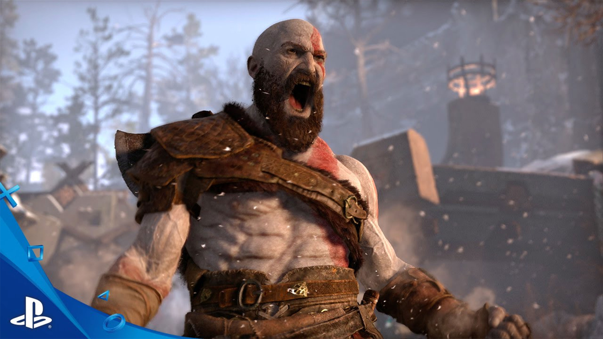
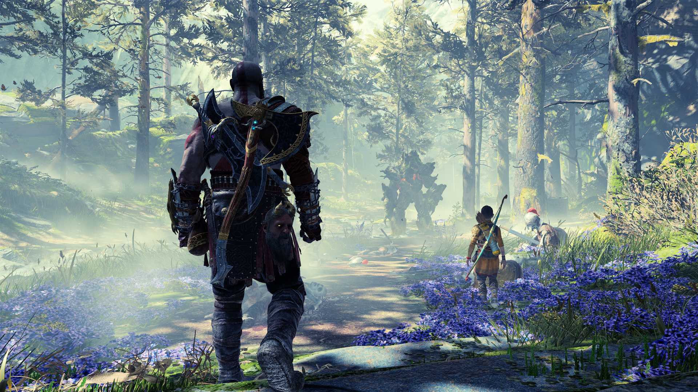
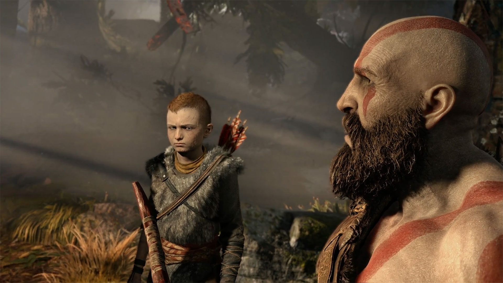
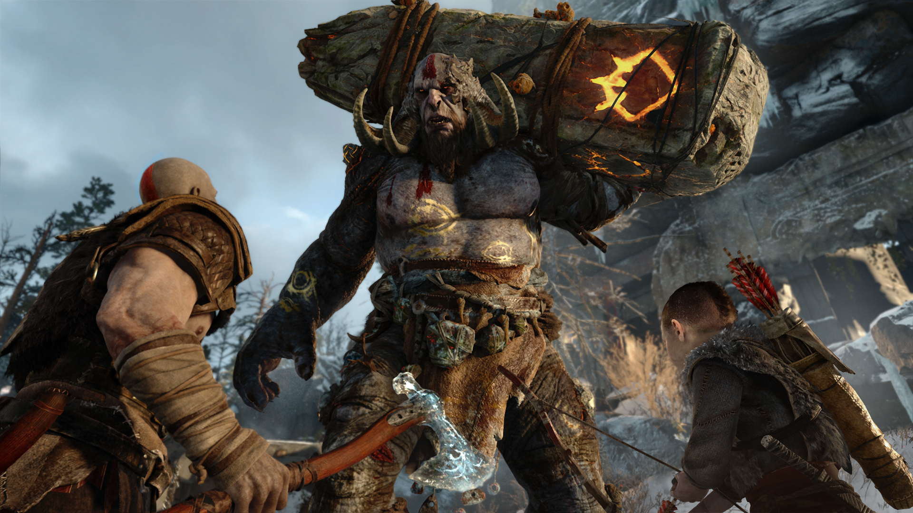
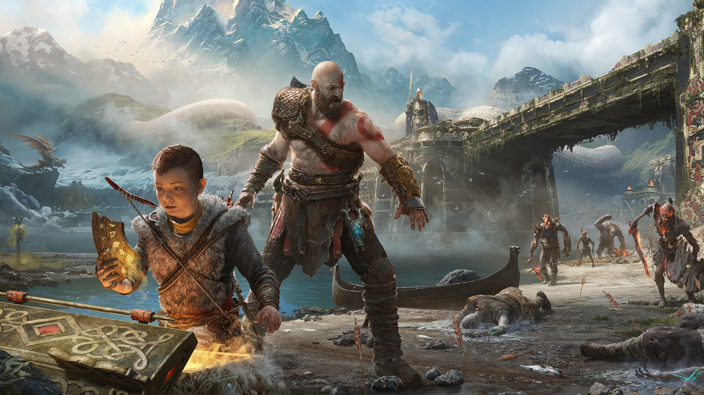
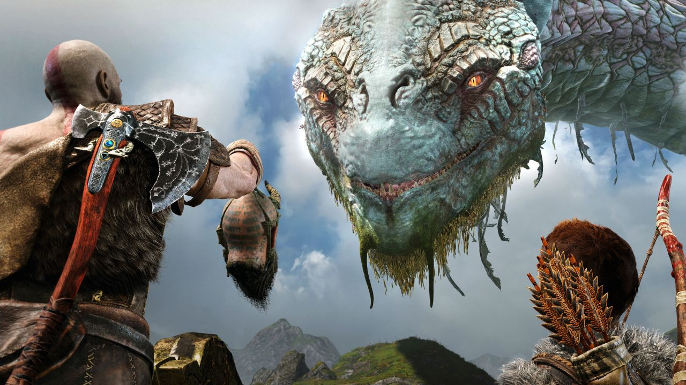
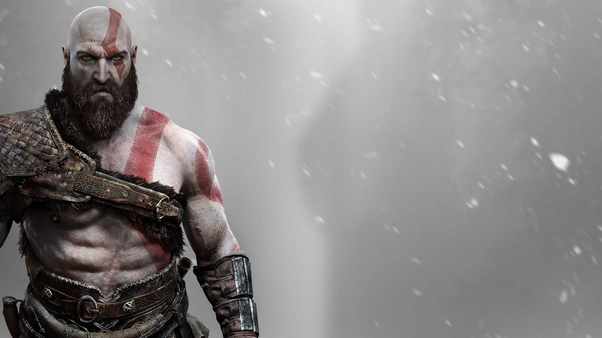
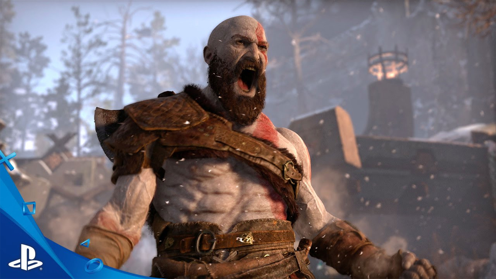
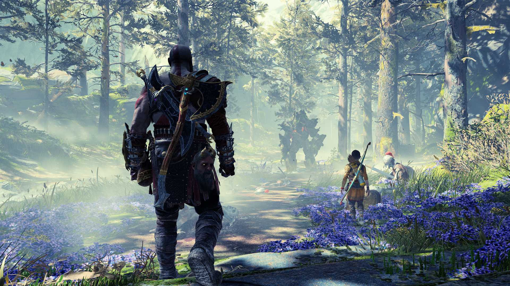
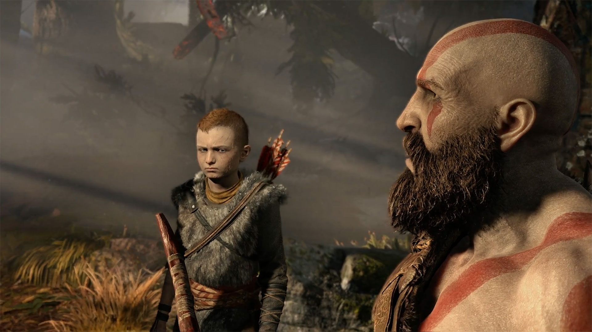
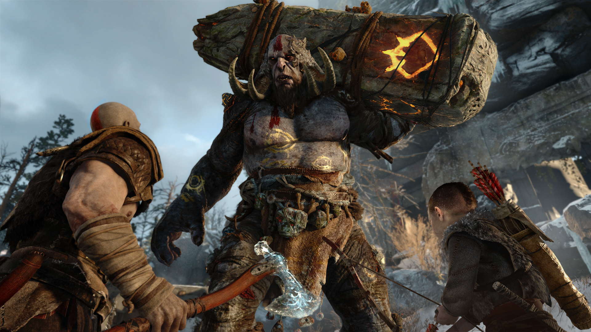
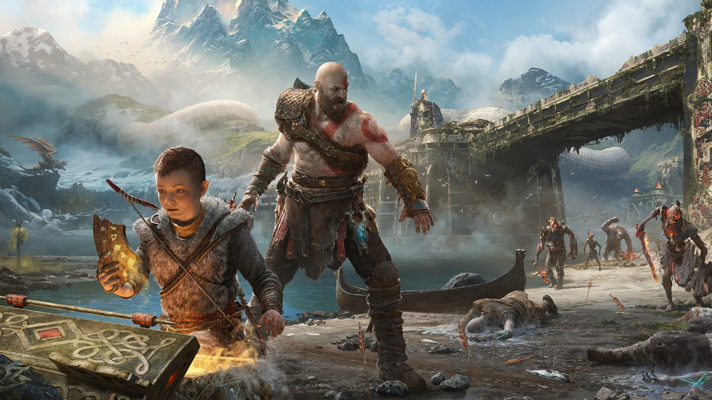
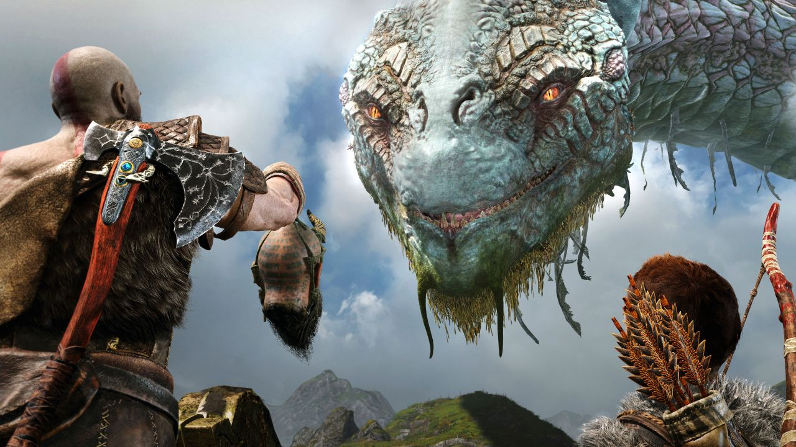
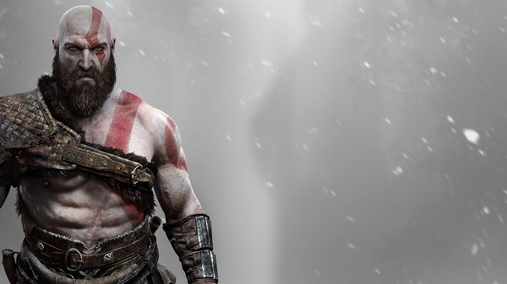
 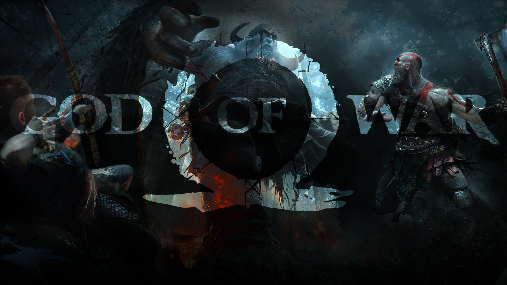
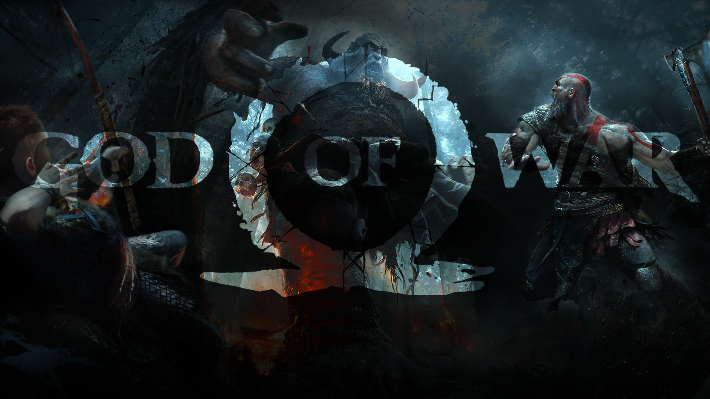
God of War was released April 20, 2018. This was one of the best storyline-based games I have
played in a long time. It has everything I have wanted in a game. It had adventure, the characters
were unique and not repetitive, the voice acting was terrific, the detail and design in everything
from the buildings to the birds was gorgeous, and the weapons available were powerful and fun to use.
The game follows to main characters Kratos and Atreus on the hunt to find a resting place for
Atreus’s mother. Throughout this entire game I had a blast. It had amazing enemy battles for all
skill levels including the advanced. The best enemy battles were the Valkyries- it was challenging
but engaging. It had wonderful character development as young Atreus becomes more of a man throughout
his entire journey. This game had puzzles and skill rooms where you had to figure out how to progress
forward. I would recommend this game to absolutely anyone, even if you are not a gamer it is
enjoyable to sit and watch the cut scenes and listen to the story because it is well done.
Listed below are some of the things I loved most about this masterpiece:
- The plot between the two characters and how it develops and strengthens the bond between
father and son. Most storyline-based games can be predictable, but I could never guess where a
cut scene was going or what I was going to do next. It felt good to be pleasantly taken aback on
where the story wanted us to go.
- The combat in the game was incredible. It felt nice not to have a gun or a knife or a bow as
my main weapons of choice. The best weapon in this game was Kratos’s Blades of Chaos. Not only
was it fun to whip the blades around but you could do impressive spin attacks that can annihilate
herds of enemies at one time. Another fun combat feature was Kratos’s anger meter. When Kratos
builds up enough anger you can use this during an attack to elicit the most damage to your opponent.
These combat features are great especially if you are new to the video game scene and if you aren’t
then bump up your difficulty and get ready for the battle of your life.
- And finally, the most impressive part of this game was the details. The characters didn’t look generic you could see the actual facial expressions on their faces and the wrinkles and smiles throughout the entire game. The World Serpent was by far my favorite. The details in his scales and teeth were absolute amazing. This game just looks smooth. Not only did the characters look stunning but so did the scenery. This game has a fast travel option through wooden doors. When you enter the fast travel door, it is like you are transported this this beautiful place surrounded by color. As you enter you feel at peace and once you start walking around in there you almost don’t want to exit to your location because it just looks amazing. This game’s details were well thought out and excellent. If you like combat, adventure, action, or an amazing story then this is the game for you!